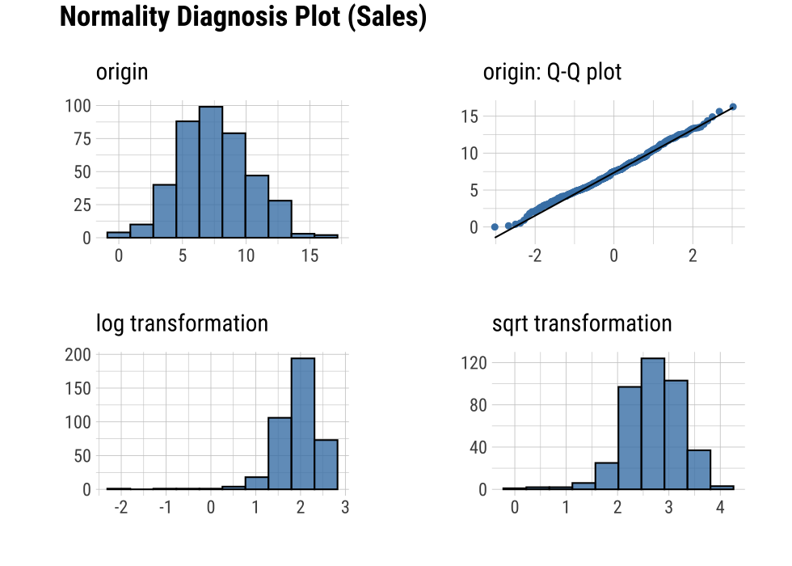
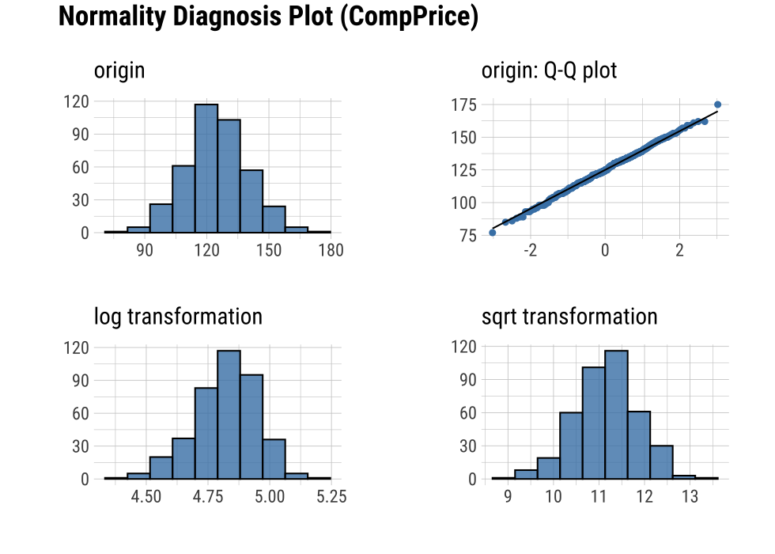
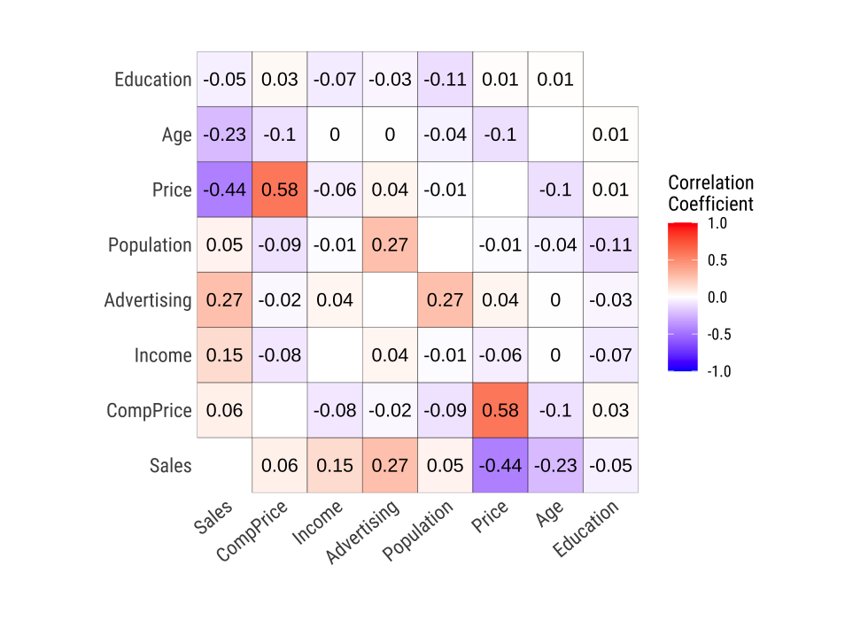
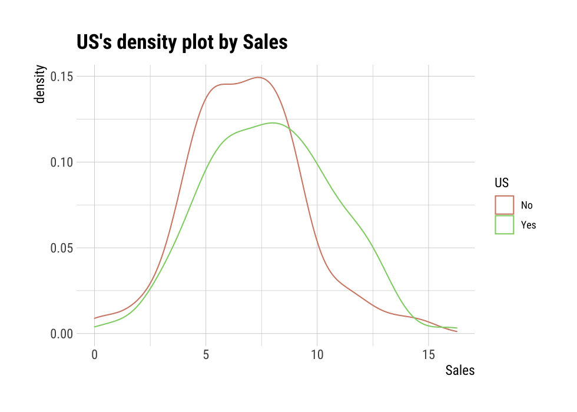
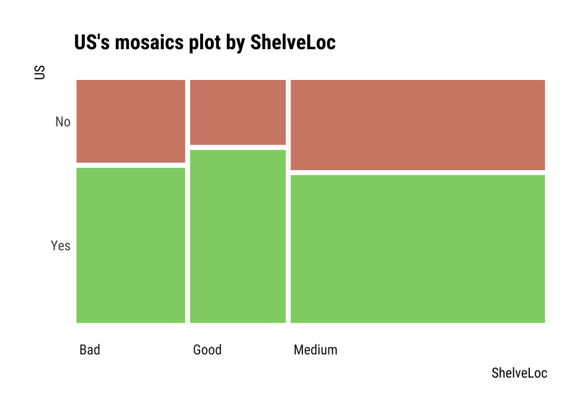
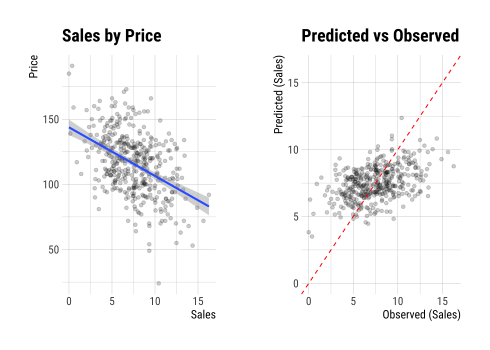
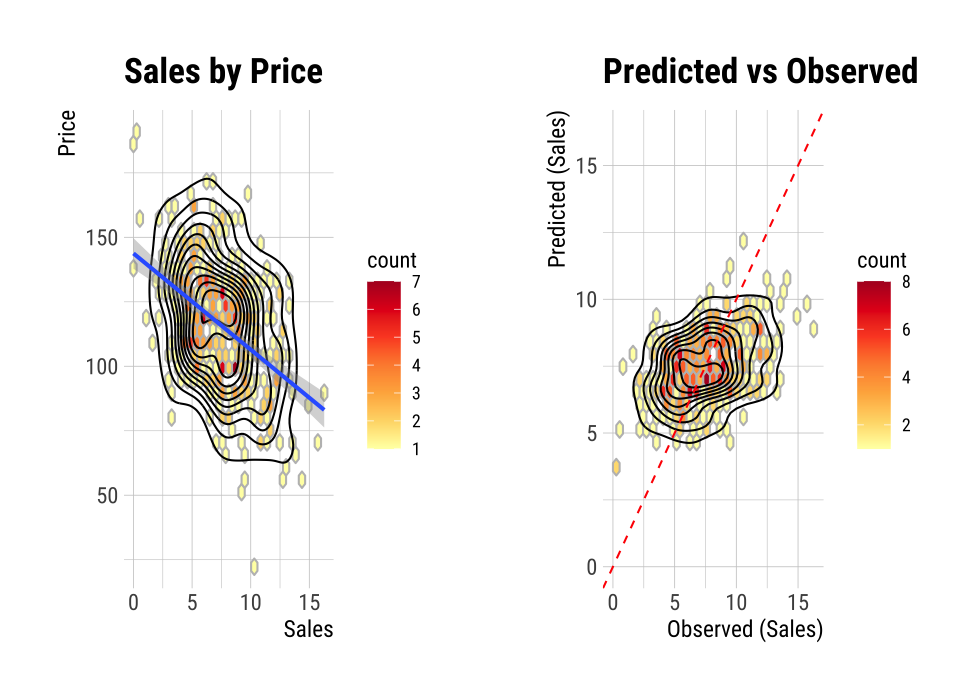
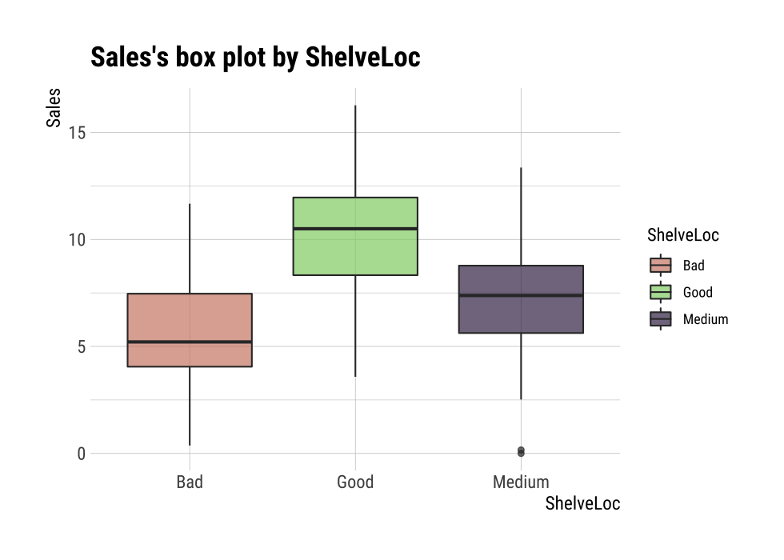

Introduce dlookr package for explore data to understand the data and find scenarios for performing the analysis.
After you have acquired the data, you should do the following:
The dlookr package makes these steps fast and easy:
This document introduces EDA(Exploratory Data Analysis) methods provided by the dlookr package. You will learn how to EDA of tbl_df data that inherits from data.frame and data.frame with functions provided by dlookr.
dlookr increases synergy with dplyr. Particularly in data exploration and data wrangle, it increases the efficiency of the tidyverse package group.
Data diagnosis supports the following data structures.
To illustrate the basic use of EDA in the dlookr package, I use a Carseats dataset. Carseats in the ISLR package is a simulated data set containing sales of child car seats at 400 different stores. This data is a data.frame created for the purpose of predicting sales volume.
'data.frame': 400 obs. of 11 variables:
$ Sales : num 9.5 11.22 10.06 7.4 4.15 ...
$ CompPrice : num 138 111 113 117 141 124 115 136 132 132 ...
$ Income : num 73 48 35 100 64 113 105 81 110 113 ...
$ Advertising: num 11 16 10 4 3 13 0 15 0 0 ...
$ Population : num 276 260 269 466 340 501 45 425 108 131 ...
$ Price : num 120 83 80 97 128 72 108 120 124 124 ...
$ ShelveLoc : Factor w/ 3 levels "Bad","Good","Medium": 1 2 3 3 1 1 3 2 3 3 ...
$ Age : num 42 65 59 55 38 78 71 67 76 76 ...
$ Education : num 17 10 12 14 13 16 15 10 10 17 ...
$ Urban : Factor w/ 2 levels "No","Yes": 2 2 2 2 2 1 2 2 1 1 ...
$ US : Factor w/ 2 levels "No","Yes": 2 2 2 2 1 2 1 2 1 2 ...The contents of individual variables are as follows. (Refer to ISLR::Carseats Man page)
When data analysis is performed, data containing missing values is frequently encountered. However, ‘Carseats’ is complete data without missing values. So the following script created the missing values and saved them as carseats.
carseats <- ISLR::Carseats
suppressWarnings(RNGversion("3.5.0"))
set.seed(123)
carseats[sample(seq(NROW(carseats)), 20), "Income"] <- NA
suppressWarnings(RNGversion("3.5.0"))
set.seed(456)
carseats[sample(seq(NROW(carseats)), 10), "Urban"] <- NA
dlookr can help to understand the distribution of data by calculating descriptive statistics of numerical data. In addition, correlation between variables is identified and normality test is performed. It also identifies the relationship between target variables and independent variables.:
The following is a list of the EDA functions included in the dlookr package.:
describe() provides descriptive statistics for numerical data.normality() and plot_normality() perform normalization and visualization of numerical data.correlate() and plot_correlate() calculate the correlation coefficient between two numerical data and provide visualization.target_by() defines the target variable and relate() describes the relationship with the variables of interest corresponding to the target variable.plot.relate() visualizes the relationship to the variable of interest corresponding to the destination variable.eda_report() performs an exploratory data analysis and reports the results.describe()describe() computes descriptive statistics for numerical data. The descriptive statistics help determine the distribution of numerical variables. Like function of dplyr, the first argument is the tibble (or data frame). The second and subsequent arguments refer to variables within that data frame.
The variables of the tbl_df object returned by describe() are as follows.
n : number of observations excluding missing valuesna : number of missing valuesmean : arithmetic averagesd : standard deviationse_mean : standard error mean. sd/sqrt(n)IQR : interquartile range (Q3-Q1)skewness : skewnesskurtosis : kurtosisp25 : Q1. 25% percentilep50 : median. 50% percentilep75 : Q3. 75% percentilep01, p05, p10, p20, p30 : 1%, 5%, 20%, 30% percentilesp40, p60, p70, p80 : 40%, 60%, 70%, 80% percentilesp90, p95, p99, p100 : 90%, 95%, 99%, 100% percentilesFor example, describe() can computes the statistics of all numerical variables in carseats:
describe(carseats)
# A tibble: 8 x 26
variable n na mean sd se_mean IQR skewness kurtosis
<chr> <int> <int> <dbl> <dbl> <dbl> <dbl> <dbl> <dbl>
1 Sales 400 0 7.50 2.82 0.141 3.93 0.186 -0.0809
2 CompPrice 400 0 125. 15.3 0.767 20 -0.0428 0.0417
3 Income 380 20 68.9 28.1 1.44 48.2 0.0449 -1.09
4 Advertising 400 0 6.64 6.65 0.333 12 0.640 -0.545
# … with 4 more rows, and 17 more variables: p00 <dbl>, p01 <dbl>,
# p05 <dbl>, p10 <dbl>, p20 <dbl>, p25 <dbl>, p30 <dbl>, p40 <dbl>,
# p50 <dbl>, p60 <dbl>, p70 <dbl>, p75 <dbl>, p80 <dbl>, p90 <dbl>,
# p95 <dbl>, p99 <dbl>, p100 <dbl>skewness : The left-skewed distribution data that is the variables with large positive skewness should consider the log or sqrt transformations to follow the normal distribution. The variables Advertising seem to need to consider variable transformation.mean and sd, se_mean : ThePopulation with a large standard error of the mean(se_mean) has low representativeness of the arithmetic mean(mean). The standard deviation(sd) is much larger than the arithmetic average.The following explains the descriptive statistics only for a few selected variables.:
# Select columns by name
describe(carseats, Sales, CompPrice, Income)
# A tibble: 3 x 26
variable n na mean sd se_mean IQR skewness kurtosis
<chr> <int> <int> <dbl> <dbl> <dbl> <dbl> <dbl> <dbl>
1 Sales 400 0 7.50 2.82 0.141 3.93 0.186 -0.0809
2 CompPrice 400 0 125. 15.3 0.767 20 -0.0428 0.0417
3 Income 380 20 68.9 28.1 1.44 48.2 0.0449 -1.09
# … with 17 more variables: p00 <dbl>, p01 <dbl>, p05 <dbl>,
# p10 <dbl>, p20 <dbl>, p25 <dbl>, p30 <dbl>, p40 <dbl>, p50 <dbl>,
# p60 <dbl>, p70 <dbl>, p75 <dbl>, p80 <dbl>, p90 <dbl>, p95 <dbl>,
# p99 <dbl>, p100 <dbl># Select all columns between year and day (include)
describe(carseats, Sales:Income)
# A tibble: 3 x 26
variable n na mean sd se_mean IQR skewness kurtosis
<chr> <int> <int> <dbl> <dbl> <dbl> <dbl> <dbl> <dbl>
1 Sales 400 0 7.50 2.82 0.141 3.93 0.186 -0.0809
2 CompPrice 400 0 125. 15.3 0.767 20 -0.0428 0.0417
3 Income 380 20 68.9 28.1 1.44 48.2 0.0449 -1.09
# … with 17 more variables: p00 <dbl>, p01 <dbl>, p05 <dbl>,
# p10 <dbl>, p20 <dbl>, p25 <dbl>, p30 <dbl>, p40 <dbl>, p50 <dbl>,
# p60 <dbl>, p70 <dbl>, p75 <dbl>, p80 <dbl>, p90 <dbl>, p95 <dbl>,
# p99 <dbl>, p100 <dbl># Select all columns except those from year to day (exclude)
describe(carseats, -(Sales:Income))
# A tibble: 5 x 26
variable n na mean sd se_mean IQR skewness kurtosis
<chr> <int> <int> <dbl> <dbl> <dbl> <dbl> <dbl> <dbl>
1 Advertisi… 400 0 6.64 6.65 0.333 12 0.640 -0.545
2 Population 400 0 265. 147. 7.37 260. -0.0512 -1.20
3 Price 400 0 116. 23.7 1.18 31 -0.125 0.452
4 Age 400 0 53.3 16.2 0.810 26.2 -0.0772 -1.13
# … with 1 more row, and 17 more variables: p00 <dbl>, p01 <dbl>,
# p05 <dbl>, p10 <dbl>, p20 <dbl>, p25 <dbl>, p30 <dbl>, p40 <dbl>,
# p50 <dbl>, p60 <dbl>, p70 <dbl>, p75 <dbl>, p80 <dbl>, p90 <dbl>,
# p95 <dbl>, p99 <dbl>, p100 <dbl>The describe() function can be sorted by left or right skewed size(skewness) using dplyr.:
carseats %>%
describe() %>%
select(variable, skewness, mean, p25, p50, p75) %>%
filter(!is.na(skewness)) %>%
arrange(desc(abs(skewness)))
# A tibble: 8 x 6
variable skewness mean p25 p50 p75
<chr> <dbl> <dbl> <dbl> <dbl> <dbl>
1 Advertising 0.640 6.64 0 5 12
2 Sales 0.186 7.50 5.39 7.49 9.32
3 Price -0.125 116. 100 117 131
4 Age -0.0772 53.3 39.8 54.5 66
# … with 4 more rowsThe describe() function supports the group_by() function syntax of the dplyr package.
carseats %>%
group_by(US) %>%
describe(Sales, Income)
# A tibble: 4 x 27
variable US n na mean sd se_mean IQR skewness
<chr> <fct> <int> <int> <dbl> <dbl> <dbl> <dbl> <dbl>
1 Income No 130 12 65.8 28.2 2.48 50 0.100
2 Income Yes 250 8 70.4 27.9 1.77 48 0.0199
3 Sales No 142 0 6.82 2.60 0.218 3.44 0.323
4 Sales Yes 258 0 7.87 2.88 0.179 4.23 0.0760
# … with 18 more variables: kurtosis <dbl>, p00 <dbl>, p01 <dbl>,
# p05 <dbl>, p10 <dbl>, p20 <dbl>, p25 <dbl>, p30 <dbl>, p40 <dbl>,
# p50 <dbl>, p60 <dbl>, p70 <dbl>, p75 <dbl>, p80 <dbl>, p90 <dbl>,
# p95 <dbl>, p99 <dbl>, p100 <dbl>carseats %>%
group_by(US, Urban) %>%
describe(Sales, Income)
# A tibble: 12 x 28
variable US Urban n na mean sd se_mean IQR skewness
<chr> <fct> <fct> <int> <int> <dbl> <dbl> <dbl> <dbl> <dbl>
1 Income No No 42 4 60.2 29.1 4.49 45.2 0.408
2 Income No Yes 84 8 69.5 27.4 2.99 47 -0.0497
3 Income No <NA> 4 0 48.2 24.7 12.3 40.8 -0.0496
4 Income Yes No 65 4 70.5 29.9 3.70 48 0.0736
# … with 8 more rows, and 18 more variables: kurtosis <dbl>,
# p00 <dbl>, p01 <dbl>, p05 <dbl>, p10 <dbl>, p20 <dbl>, p25 <dbl>,
# p30 <dbl>, p40 <dbl>, p50 <dbl>, p60 <dbl>, p70 <dbl>, p75 <dbl>,
# p80 <dbl>, p90 <dbl>, p95 <dbl>, p99 <dbl>, p100 <dbl>normality()normality() performs a normality test on numerical data. Shapiro-Wilk normality test is performed. When the number of observations is greater than 5000, it is tested after extracting 5000 samples by random simple sampling.
The variables of tbl_df object returned by normality() are as follows.
statistic : Statistics of the Shapiro-Wilk testp_value : p-value of the Shapiro-Wilk testsample : Number of sample observations performed Shapiro-Wilk testnormality() performs the normality test for all numerical variables of carseats as follows.:
normality(carseats)
# A tibble: 8 x 4
vars statistic p_value sample
<chr> <dbl> <dbl> <dbl>
1 Sales 0.995 2.54e- 1 400
2 CompPrice 0.998 9.77e- 1 400
3 Income 0.961 1.52e- 8 400
4 Advertising 0.874 1.49e-17 400
# … with 4 more rowsThe following example performs a normality test on only a few selected variables.
# Select columns by name
normality(carseats, Sales, CompPrice, Income)
# A tibble: 3 x 4
vars statistic p_value sample
<chr> <dbl> <dbl> <dbl>
1 Sales 0.995 0.254 400
2 CompPrice 0.998 0.977 400
3 Income 0.961 0.0000000152 400
# Select all columns between year and day (inclusive)
normality(carseats, Sales:Income)
# A tibble: 3 x 4
vars statistic p_value sample
<chr> <dbl> <dbl> <dbl>
1 Sales 0.995 0.254 400
2 CompPrice 0.998 0.977 400
3 Income 0.961 0.0000000152 400
# Select all columns except those from year to day (inclusive)
normality(carseats, -(Sales:Income))
# A tibble: 5 x 4
vars statistic p_value sample
<chr> <dbl> <dbl> <dbl>
1 Advertising 0.874 1.49e-17 400
2 Population 0.952 4.08e-10 400
3 Price 0.996 3.90e- 1 400
4 Age 0.957 1.86e- 9 400
# … with 1 more rowYou can use dplyr to sort variables that do not follow a normal distribution in order of p_value:
# A tibble: 5 x 4
vars statistic p_value sample
<chr> <dbl> <dbl> <dbl>
1 Advertising 0.874 1.49e-17 400
2 Education 0.924 2.43e-13 400
3 Population 0.952 4.08e-10 400
4 Age 0.957 1.86e- 9 400
# … with 1 more rowIn particular, the Advertising variable is considered to be the most out of the normal distribution.
The normality() function supports the group_by() function syntax in the dplyr package.
# A tibble: 6 x 6
variable ShelveLoc US statistic p_value sample
<chr> <fct> <fct> <dbl> <dbl> <dbl>
1 Income Bad No 0.969 0.470 34
2 Income Bad Yes 0.958 0.0343 62
3 Income Good No 0.902 0.0328 24
4 Income Good Yes 0.955 0.0296 61
# … with 2 more rowsThe Income variable does not follow the normal distribution. However, the case where US is No and ShelveLoc is Good and Bad at the significance level of 0.01, it follows the normal distribution.
The following example performs normality test of log(Income) for each combination of ShelveLoc and US categorical variables to search for variables that follow the normal distribution.
carseats %>%
mutate(log_income = log(Income)) %>%
group_by(ShelveLoc, US) %>%
normality(log_income) %>%
filter(p_value > 0.01)
# A tibble: 1 x 6
variable ShelveLoc US statistic p_value sample
<chr> <fct> <fct> <dbl> <dbl> <dbl>
1 log_income Bad No 0.940 0.0737 34plot_normality()plot_normality() visualizes the normality of numeric data.
The information visualized by plot_normality() is as follows.:
Histogram of original dataQ-Q plot of original datahistogram of log transformed dataHistogram of square root transformed dataIn the data analysis process, it often encounters numerical data that follows the power-law distribution. Since the numerical data that follows the power-law distribution is converted into a normal distribution by performing the log or sqrt transformation, so draw a histogram of the log and sqrt transformed data.
plot_normality() can also specify several variables like normality() function.
# Select columns by name
plot_normality(carseats, Sales, CompPrice)

The plot_normality() function also supports the group_by() function syntax in the dplyr package.
correlation coefficient using correlate()correlate() calculates the correlation coefficient of all combinations of carseats numerical variables as follows:
correlate(carseats)
# A tibble: 56 x 3
var1 var2 coef_corr
<fct> <fct> <dbl>
1 CompPrice Sales 0.0641
2 Income Sales 0.151
3 Advertising Sales 0.270
4 Population Sales 0.0505
# … with 52 more rowsThe following example performs a normality test only on combinations that include several selected variables.
# Select columns by name
correlate(carseats, Sales, CompPrice, Income)
# A tibble: 21 x 3
var1 var2 coef_corr
<fct> <fct> <dbl>
1 CompPrice Sales 0.0641
2 Income Sales 0.151
3 Sales CompPrice 0.0641
4 Income CompPrice -0.0761
# … with 17 more rows
# Select all columns between year and day (include)
correlate(carseats, Sales:Income)
# A tibble: 21 x 3
var1 var2 coef_corr
<fct> <fct> <dbl>
1 CompPrice Sales 0.0641
2 Income Sales 0.151
3 Sales CompPrice 0.0641
4 Income CompPrice -0.0761
# … with 17 more rows
# Select all columns except those from year to day (exclude)
correlate(carseats, -(Sales:Income))
# A tibble: 35 x 3
var1 var2 coef_corr
<fct> <fct> <dbl>
1 Advertising Sales 0.270
2 Population Sales 0.0505
3 Price Sales -0.445
4 Age Sales -0.232
# … with 31 more rowscorrelate() produces two pairs of variables. So the following example uses filter() to get the correlation coefficient for a pair of variable combinations:
carseats %>%
correlate(Sales:Income) %>%
filter(as.integer(var1) > as.integer(var2))
# A tibble: 3 x 3
var1 var2 coef_corr
<fct> <fct> <dbl>
1 CompPrice Sales 0.0641
2 Income Sales 0.151
3 Income CompPrice -0.0761The correlate() also supports the group_by() function syntax in the dplyr package.
carseats %>%
filter(ShelveLoc == "Good") %>%
group_by(Urban, US) %>%
correlate(Sales) %>%
filter(abs(coef_corr) > 0.5)
# A tibble: 10 x 5
Urban US var1 var2 coef_corr
<fct> <fct> <fct> <fct> <dbl>
1 No No Sales Population -0.530
2 No No Sales Price -0.838
3 No Yes Sales Price -0.630
4 Yes No Sales Price -0.833
# … with 6 more rowsplot_correlate()plot_correlate() visualizes the correlation matrix.
plot_correlate(carseats)

plot_correlate() can also specify multiple variables, like the correlate() function. The following is a visualization of the correlation matrix including several selected variables.
# Select columns by name
plot_correlate(carseats, Sales, Price)
The plot_correlate() function also supports the group_by() function syntax in the dplyr package.
To perform EDA based on target variable, you need to create a target_by class object. target_by() creates a target_by class with an object inheriting data.frame or data.frame. target_by() is similar to group_by() in dplyr which creates grouped_df. The difference is that you specify only one variable.
The following is an example of specifying US as target variable in carseats data.frame.:
categ <- target_by(carseats, US)
Let’s perform EDA when the target variable is a categorical variable. When the categorical variable US is the target variable, we examine the relationship between the target variable and the predictor.
relate() shows the relationship between the target variable and the predictor. The following example shows the relationship between Sales and the target variable US. The predictor Sales is a numeric variable. In this case, the descriptive statistics are shown for each level of the target variable.
# If the variable of interest is a numerical variable
cat_num <- relate(categ, Sales)
cat_num
# A tibble: 3 x 27
variable US n na mean sd se_mean IQR skewness
<chr> <fct> <int> <int> <dbl> <dbl> <dbl> <dbl> <dbl>
1 Sales No 142 0 6.82 2.60 0.218 3.44 0.323
2 Sales Yes 258 0 7.87 2.88 0.179 4.23 0.0760
3 Sales total 400 0 7.50 2.82 0.141 3.93 0.186
# … with 18 more variables: kurtosis <dbl>, p00 <dbl>, p01 <dbl>,
# p05 <dbl>, p10 <dbl>, p20 <dbl>, p25 <dbl>, p30 <dbl>, p40 <dbl>,
# p50 <dbl>, p60 <dbl>, p70 <dbl>, p75 <dbl>, p80 <dbl>, p90 <dbl>,
# p95 <dbl>, p99 <dbl>, p100 <dbl>summary(cat_num)
variable US n na
Length:3 No :1 Min. :142.0 Min. :0
Class :character Yes :1 1st Qu.:200.0 1st Qu.:0
Mode :character total:1 Median :258.0 Median :0
Mean :266.7 Mean :0
3rd Qu.:329.0 3rd Qu.:0
Max. :400.0 Max. :0
mean sd se_mean IQR
Min. :6.823 Min. :2.603 Min. :0.1412 Min. :3.442
1st Qu.:7.160 1st Qu.:2.713 1st Qu.:0.1602 1st Qu.:3.686
Median :7.496 Median :2.824 Median :0.1791 Median :3.930
Mean :7.395 Mean :2.768 Mean :0.1796 Mean :3.866
3rd Qu.:7.682 3rd Qu.:2.851 3rd Qu.:0.1988 3rd Qu.:4.077
Max. :7.867 Max. :2.877 Max. :0.2184 Max. :4.225
skewness kurtosis p00
Min. :0.07603 Min. :-0.32638 Min. :0.0000
1st Qu.:0.13080 1st Qu.:-0.20363 1st Qu.:0.0000
Median :0.18556 Median :-0.08088 Median :0.0000
Mean :0.19489 Mean : 0.13350 Mean :0.1233
3rd Qu.:0.25432 3rd Qu.: 0.36344 3rd Qu.:0.1850
Max. :0.32308 Max. : 0.80776 Max. :0.3700
p01 p05 p10 p20
Min. :0.4675 Min. :3.147 Min. :3.917 Min. :4.754
1st Qu.:0.6868 1st Qu.:3.148 1st Qu.:4.018 1st Qu.:4.910
Median :0.9062 Median :3.149 Median :4.119 Median :5.066
Mean :1.0072 Mean :3.183 Mean :4.073 Mean :5.051
3rd Qu.:1.2771 3rd Qu.:3.200 3rd Qu.:4.152 3rd Qu.:5.199
Max. :1.6480 Max. :3.252 Max. :4.184 Max. :5.332
p25 p30 p40 p50
Min. :5.080 Min. :5.306 Min. :5.994 Min. :6.660
1st Qu.:5.235 1st Qu.:5.587 1st Qu.:6.301 1st Qu.:7.075
Median :5.390 Median :5.867 Median :6.608 Median :7.490
Mean :5.411 Mean :5.775 Mean :6.506 Mean :7.313
3rd Qu.:5.576 3rd Qu.:6.010 3rd Qu.:6.762 3rd Qu.:7.640
Max. :5.763 Max. :6.153 Max. :6.916 Max. :7.790
p60 p70 p75 p80
Min. :7.496 Min. :7.957 Min. :8.523 Min. : 8.772
1st Qu.:7.787 1st Qu.:8.386 1st Qu.:8.921 1st Qu.: 9.265
Median :8.078 Median :8.815 Median :9.320 Median : 9.758
Mean :8.076 Mean :8.740 Mean :9.277 Mean : 9.665
3rd Qu.:8.366 3rd Qu.:9.132 3rd Qu.:9.654 3rd Qu.:10.111
Max. :8.654 Max. :9.449 Max. :9.988 Max. :10.464
p90 p95 p99 p100
Min. : 9.349 Min. :11.28 Min. :13.64 Min. :14.90
1st Qu.:10.325 1st Qu.:11.86 1st Qu.:13.78 1st Qu.:15.59
Median :11.300 Median :12.44 Median :13.91 Median :16.27
Mean :10.795 Mean :12.08 Mean :13.86 Mean :15.81
3rd Qu.:11.518 3rd Qu.:12.49 3rd Qu.:13.97 3rd Qu.:16.27
Max. :11.736 Max. :12.54 Max. :14.03 Max. :16.27 plot() visualizes the relate class object created by relate() as the relationship between the target variable and the predictor variable. The relationship between US and Sales is visualized by density plot.
plot(cat_num)

The following example shows the relationship between ShelveLoc and the target variable US. The predictor variable ShelveLoc is a categorical variable. In this case, it shows the contingency table of two variables. The summary() function performs independence test on the contingency table.
# If the variable of interest is a categorical variable
cat_cat <- relate(categ, ShelveLoc)
cat_cat
ShelveLoc
US Bad Good Medium
No 34 24 84
Yes 62 61 135summary(cat_cat)
Call: xtabs(formula = formula_str, data = data, addNA = TRUE)
Number of cases in table: 400
Number of factors: 2
Test for independence of all factors:
Chisq = 2.7397, df = 2, p-value = 0.2541plot() visualizes the relationship between the target variable and the predictor. The relationship between US and ShelveLoc is represented by a mosaics plot.
plot(cat_cat)

Let’s perform EDA when the target variable is numeric. When the numeric variable Sales is the target variable, we examine the relationship between the target variable and the predictor.
# If the variable of interest is a numerical variable
num <- target_by(carseats, Sales)
The following example shows the relationship between Price and the target variable Sales. The predictor variable Price is a numeric variable. In this case, it shows the result of a simple linear model of the target ~ predictor formula. The summary() function expresses the details of the model.
# If the variable of interest is a numerical variable
num_num <- relate(num, Price)
num_num
Call:
lm(formula = formula_str, data = data)
Coefficients:
(Intercept) Price
13.64192 -0.05307 summary(num_num)
Call:
lm(formula = formula_str, data = data)
Residuals:
Min 1Q Median 3Q Max
-6.5224 -1.8442 -0.1459 1.6503 7.5108
Coefficients:
Estimate Std. Error t value Pr(>|t|)
(Intercept) 13.641915 0.632812 21.558 <2e-16 ***
Price -0.053073 0.005354 -9.912 <2e-16 ***
---
Signif. codes: 0 '***' 0.001 '**' 0.01 '*' 0.05 '.' 0.1 ' ' 1
Residual standard error: 2.532 on 398 degrees of freedom
Multiple R-squared: 0.198, Adjusted R-squared: 0.196
F-statistic: 98.25 on 1 and 398 DF, p-value: < 2.2e-16plot() visualizes the relationship between the target and predictor variables. The relationship between Sales and Price is visualized with a scatter plot. The figure on the left shows the scatter plot of Sales and Price and the confidence interval of the regression line and regression line. The figure on the right shows the relationship between the original data and the predicted values of the linear model as a scatter plot. If there is a linear relationship between the two variables, the scatter plot of the observations converges on the red diagonal line.
plot(num_num)

The scatter plot of the data with a large number of observations is output as overlapping points. This makes it difficult to judge the relationship between the two variables. It also takes a long time to perform the visualization. In this case, the above problem can be solved by hexabin plot.
In plot(), the hex_thres argument provides a basis for drawing hexabin plot. If the number of observations is greater than hex_thres, draw a hexabin plot.
The following example visualizes the hexabin plot rather than the scatter plot by specifying 350 for the hex_thres argument. This is because the number of observations is 400.
plot(num_num, hex_thres = 350)

The following example shows the relationship between ShelveLoc and the target variable Sales. The predictor ShelveLoc is a categorical variable and shows the result of one-way ANOVA of target ~ predictor relationship. The results are expressed in terms of ANOVA. The summary() function shows the regression coefficients for each level of the predictor. In other words, it shows detailed information about simple regression analysis of target ~ predictor relationship.
# If the variable of interest is a categorical variable
num_cat <- relate(num, ShelveLoc)
num_cat
Analysis of Variance Table
Response: Sales
Df Sum Sq Mean Sq F value Pr(>F)
ShelveLoc 2 1009.5 504.77 92.23 < 2.2e-16 ***
Residuals 397 2172.7 5.47
---
Signif. codes: 0 '***' 0.001 '**' 0.01 '*' 0.05 '.' 0.1 ' ' 1summary(num_cat)
Call:
lm(formula = formula(formula_str), data = data)
Residuals:
Min 1Q Median 3Q Max
-7.3066 -1.6282 -0.0416 1.5666 6.1471
Coefficients:
Estimate Std. Error t value Pr(>|t|)
(Intercept) 5.5229 0.2388 23.131 < 2e-16 ***
ShelveLocGood 4.6911 0.3484 13.464 < 2e-16 ***
ShelveLocMedium 1.7837 0.2864 6.229 1.2e-09 ***
---
Signif. codes: 0 '***' 0.001 '**' 0.01 '*' 0.05 '.' 0.1 ' ' 1
Residual standard error: 2.339 on 397 degrees of freedom
Multiple R-squared: 0.3172, Adjusted R-squared: 0.3138
F-statistic: 92.23 on 2 and 397 DF, p-value: < 2.2e-16plot() visualizes the relationship between the target variable and the predictor. The relationship between Sales and ShelveLoc is represented by a box plot.
plot(num_cat)

dlookr provides two automated EDA reports:
eda_web_report()eda_web_report() create dynamic report for object inherited from data.frame(tbl_df, tbl, etc) or data.frame.
The contents of the report are as follows.:
eda_web_report() generates various reports with the following arguments.
The following script creates a EDA report for the data.frame class object, heartfailure.
heartfailure %>%
eda_web_report(target = "death_event", subtitle = "heartfailure",
output_dir = "./", output_file = "EDA.html", theme = "blue")
(#fig:eda_web_title)The part of the report
eda_paged_report()eda_paged_report() create static report for object inherited from data.frame(tbl_df, tbl, etc) or data.frame.
The contents of the report are as follows.:
eda_paged_report() generates various reports with the following arguments.
The following script creates a EDA report for the data.frame class object, heartfailure.
heartfailure %>%
eda_paged_report(target = "death_event", subtitle = "heartfailure",
output_dir = "./", output_file = "EDA.pdf", theme = "blue")
(#fig:eda_paged_cover)The part of the report
(#fig:eda_paged_cntent)The dynamic contents of the report
EDA function for table of DBMS supports In-database mode that performs SQL operations on the DBMS side. If the size of the data is large, using In-database mode is faster.
It is difficult to obtain anomaly or to implement the sampling-based algorithm in SQL of DBMS. So some functions do not yet support In-database mode. In this case, it is performed in In-memory mode in which table data is brought to R side and calculated. In this case, if the data size is large, the execution speed may be slow. It supports the collect_size argument, which allows you to import the specified number of samples of data into R.
normality()plot_normality()correlate()plot_correlate()describe()eda_web_report()eda_paged_report()Copy the carseats data frame to the SQLite DBMS and create it as a table named TB_CARSEATS. Mysql/MariaDB, PostgreSQL, Oracle DBMS, other DBMS are also available for your environment.
if (!require(DBI)) install.packages('DBI')
if (!require(RSQLite)) install.packages('RSQLite')
if (!require(dplyr)) install.packages('dplyr')
if (!require(dbplyr)) install.packages('dbplyr')
library(dplyr)
carseats <- ISLR::Carseats
carseats[sample(seq(NROW(carseats)), 20), "Income"] <- NA
carseats[sample(seq(NROW(carseats)), 5), "Urban"] <- NA
# connect DBMS
con_sqlite <- DBI::dbConnect(RSQLite::SQLite(), ":memory:")
# copy carseats to the DBMS with a table named TB_CARSEATS
copy_to(con_sqlite, carseats, name = "TB_CARSEATS", overwrite = TRUE)
Use dplyr::tbl() to create a tbl_dbi object, then use it as a data frame object. That is, the data argument of all EDA function is specified as tbl_dbi object instead of data frame object.
# Positive values select variables
con_sqlite %>%
tbl("TB_CARSEATS") %>%
describe(Sales, CompPrice, Income)
# A tibble: 3 x 26
variable n na mean sd se_mean IQR skewness kurtosis
<chr> <int> <int> <dbl> <dbl> <dbl> <dbl> <dbl> <dbl>
1 Sales 400 0 7.50 2.82 0.141 3.93 0.186 -0.0809
2 CompPrice 400 0 125. 15.3 0.767 20 -0.0428 0.0417
3 Income 380 20 68.8 28.0 1.44 47.2 0.0641 -1.08
# … with 17 more variables: p00 <dbl>, p01 <dbl>, p05 <dbl>,
# p10 <dbl>, p20 <dbl>, p25 <dbl>, p30 <dbl>, p40 <dbl>, p50 <dbl>,
# p60 <dbl>, p70 <dbl>, p75 <dbl>, p80 <dbl>, p90 <dbl>, p95 <dbl>,
# p99 <dbl>, p100 <dbl>
# Negative values to drop variables, and In-memory mode and collect size is 200
con_sqlite %>%
tbl("TB_CARSEATS") %>%
describe(-Sales, -CompPrice, -Income, collect_size = 200)
# A tibble: 5 x 26
variable n na mean sd se_mean IQR skewness kurtosis
<chr> <int> <int> <dbl> <dbl> <dbl> <dbl> <dbl> <dbl>
1 Advertisi… 200 0 5.88 6.07 0.429 11 0.648 -0.667
2 Population 200 0 255. 149. 10.6 251. 0.0241 -1.22
3 Price 200 0 114. 23.7 1.68 31.2 -0.107 1.08
4 Age 200 0 54.6 15.9 1.13 24 -0.245 -1.01
# … with 1 more row, and 17 more variables: p00 <dbl>, p01 <dbl>,
# p05 <dbl>, p10 <dbl>, p20 <dbl>, p25 <dbl>, p30 <dbl>, p40 <dbl>,
# p50 <dbl>, p60 <dbl>, p70 <dbl>, p75 <dbl>, p80 <dbl>, p90 <dbl>,
# p95 <dbl>, p99 <dbl>, p100 <dbl>
# Find the statistic of all numerical variables by 'ShelveLoc' and 'US',
# and extract only those with 'ShelveLoc' variable level is "Good".
con_sqlite %>%
tbl("TB_CARSEATS") %>%
group_by(ShelveLoc, US) %>%
describe() %>%
filter(ShelveLoc == "Good")
# A tibble: 16 x 28
variable ShelveLoc US n na mean sd se_mean IQR
<chr> <chr> <chr> <int> <int> <dbl> <dbl> <dbl> <dbl>
1 Advertising Good No 24 0 0.0417 0.204 0.0417 0
2 Advertising Good Yes 61 0 10.2 5.91 0.757 7
3 Age Good No 24 0 52.3 17.2 3.52 26
4 Age Good Yes 61 0 52.7 14.8 1.90 22
# … with 12 more rows, and 19 more variables: skewness <dbl>,
# kurtosis <dbl>, p00 <dbl>, p01 <dbl>, p05 <dbl>, p10 <dbl>,
# p20 <dbl>, p25 <dbl>, p30 <dbl>, p40 <dbl>, p50 <dbl>, p60 <dbl>,
# p70 <dbl>, p75 <dbl>, p80 <dbl>, p90 <dbl>, p95 <dbl>, p99 <dbl>,
# p100 <dbl>
# extract only those with 'Urban' variable level is "Yes",
# and find 'Sales' statistics by 'ShelveLoc' and 'US'
con_sqlite %>%
tbl("TB_CARSEATS") %>%
filter(Urban == "Yes") %>%
group_by(ShelveLoc, US) %>%
describe(Sales)
# A tibble: 6 x 28
variable ShelveLoc US n na mean sd se_mean IQR
<chr> <chr> <chr> <int> <int> <dbl> <dbl> <dbl> <dbl>
1 Sales Bad No 23 0 5.36 1.91 0.398 2.32
2 Sales Bad Yes 50 0 5.54 2.57 0.364 3.74
3 Sales Good No 18 0 9.21 2.97 0.700 3.71
4 Sales Good Yes 37 0 10.9 2.37 0.389 3.41
# … with 2 more rows, and 19 more variables: skewness <dbl>,
# kurtosis <dbl>, p00 <dbl>, p01 <dbl>, p05 <dbl>, p10 <dbl>,
# p20 <dbl>, p25 <dbl>, p30 <dbl>, p40 <dbl>, p50 <dbl>, p60 <dbl>,
# p70 <dbl>, p75 <dbl>, p80 <dbl>, p90 <dbl>, p95 <dbl>, p99 <dbl>,
# p100 <dbl># Test all numerical variables by 'ShelveLoc' and 'US',
# and extract only those with 'ShelveLoc' variable level is "Good".
con_sqlite %>%
tbl("TB_CARSEATS") %>%
group_by(ShelveLoc, US) %>%
normality() %>%
filter(ShelveLoc == "Good")
# A tibble: 16 x 6
variable ShelveLoc US statistic p_value sample
<chr> <chr> <chr> <dbl> <dbl> <dbl>
1 Sales Good No 0.955 0.342 24
2 Sales Good Yes 0.983 0.567 61
3 CompPrice Good No 0.970 0.658 24
4 CompPrice Good Yes 0.984 0.598 61
# … with 12 more rows
# extract only those with 'Urban' variable level is "Yes",
# and test 'Sales' by 'ShelveLoc' and 'US'
con_sqlite %>%
tbl("TB_CARSEATS") %>%
filter(Urban == "Yes") %>%
group_by(ShelveLoc, US) %>%
normality(Sales)
# A tibble: 6 x 6
variable ShelveLoc US statistic p_value sample
<chr> <chr> <chr> <dbl> <dbl> <dbl>
1 Sales Bad No 0.985 0.968 23
2 Sales Bad Yes 0.985 0.774 50
3 Sales Good No 0.959 0.576 18
4 Sales Good Yes 0.969 0.384 37
# … with 2 more rows
# Test log(Income) variables by 'ShelveLoc' and 'US',
# and extract only p.value greater than 0.01.
# SQLite extension functions for log transformation
RSQLite::initExtension(con_sqlite)
con_sqlite %>%
tbl("TB_CARSEATS") %>%
mutate(log_income = log(Income)) %>%
group_by(ShelveLoc, US) %>%
normality(log_income) %>%
filter(p_value > 0.01)
# A tibble: 1 x 6
variable ShelveLoc US statistic p_value sample
<chr> <chr> <chr> <dbl> <dbl> <dbl>
1 log_income Bad No 0.946 0.104 34# Correlation coefficient
# that eliminates redundant combination of variables
con_sqlite %>%
tbl("TB_CARSEATS") %>%
correlate() %>%
filter(as.integer(var1) > as.integer(var2))
# A tibble: 28 x 3
var1 var2 coef_corr
<fct> <fct> <dbl>
1 CompPrice Sales 0.0641
2 Income Sales 0.141
3 Advertising Sales 0.270
4 Population Sales 0.0505
# … with 24 more rows
con_sqlite %>%
tbl("TB_CARSEATS") %>%
correlate(Sales, Price) %>%
filter(as.integer(var1) > as.integer(var2))
# A tibble: 5 x 3
var1 var2 coef_corr
<fct> <fct> <dbl>
1 Price Sales -0.445
2 Price CompPrice 0.585
3 Price Income -0.0484
4 Price Advertising 0.0445
# … with 1 more row
# Compute the correlation coefficient of Sales variable by 'ShelveLoc'
# and 'US' variables. And extract only those with absolute
# value of correlation coefficient is greater than 0.5
con_sqlite %>%
tbl("TB_CARSEATS") %>%
group_by(ShelveLoc, US) %>%
correlate(Sales) %>%
filter(abs(coef_corr) >= 0.5)
# A tibble: 6 x 5
ShelveLoc US var1 var2 coef_corr
<chr> <chr> <fct> <fct> <dbl>
1 Bad No Sales Price -0.527
2 Bad Yes Sales Price -0.583
3 Good No Sales Price -0.811
4 Good Yes Sales Price -0.603
# … with 2 more rows
# extract only those with 'ShelveLoc' variable level is "Good",
# and compute the correlation coefficient of 'Sales' variable
# by 'Urban' and 'US' variables.
# And the correlation coefficient is negative and smaller than 0.5
con_sqlite %>%
tbl("TB_CARSEATS") %>%
filter(ShelveLoc == "Good") %>%
group_by(Urban, US) %>%
correlate(Sales) %>%
filter(coef_corr < 0) %>%
filter(abs(coef_corr) > 0.5)
# A tibble: 10 x 5
Urban US var1 var2 coef_corr
<chr> <chr> <fct> <fct> <dbl>
1 No No Sales Population -0.530
2 No No Sales Price -0.838
3 No Yes Sales Price -0.644
4 Yes No Sales Price -0.833
# … with 6 more rows# Extract only those with 'ShelveLoc' variable level is "Good",
# and visualize correlation plot of 'Sales' variable by 'Urban'
# and 'US' variables.
# the result is same as a data.frame, but not display here. reference above in document.
con_sqlite %>%
tbl("TB_CARSEATS") %>%
filter(ShelveLoc == "Good") %>%
group_by(Urban) %>%
plot_correlate(Sales)
The following is an EDA where the target column is character and the predictor column is a numeric type.
# If the target variable is a categorical variable
categ <- target_by(con_sqlite %>% tbl("TB_CARSEATS") , US)
# If the variable of interest is a numerical variable
cat_num <- relate(categ, Sales)
cat_num
# A tibble: 3 x 27
variable US n na mean sd se_mean IQR skewness
<chr> <fct> <int> <int> <dbl> <dbl> <dbl> <dbl> <dbl>
1 Sales No 142 0 6.82 2.60 0.218 3.44 0.323
2 Sales Yes 258 0 7.87 2.88 0.179 4.23 0.0760
3 Sales total 400 0 7.50 2.82 0.141 3.93 0.186
# … with 18 more variables: kurtosis <dbl>, p00 <dbl>, p01 <dbl>,
# p05 <dbl>, p10 <dbl>, p20 <dbl>, p25 <dbl>, p30 <dbl>, p40 <dbl>,
# p50 <dbl>, p60 <dbl>, p70 <dbl>, p75 <dbl>, p80 <dbl>, p90 <dbl>,
# p95 <dbl>, p99 <dbl>, p100 <dbl>summary(cat_num)
variable US n na
Length:3 No :1 Min. :142.0 Min. :0
Class :character Yes :1 1st Qu.:200.0 1st Qu.:0
Mode :character total:1 Median :258.0 Median :0
Mean :266.7 Mean :0
3rd Qu.:329.0 3rd Qu.:0
Max. :400.0 Max. :0
mean sd se_mean IQR
Min. :6.823 Min. :2.603 Min. :0.1412 Min. :3.442
1st Qu.:7.160 1st Qu.:2.713 1st Qu.:0.1602 1st Qu.:3.686
Median :7.496 Median :2.824 Median :0.1791 Median :3.930
Mean :7.395 Mean :2.768 Mean :0.1796 Mean :3.866
3rd Qu.:7.682 3rd Qu.:2.851 3rd Qu.:0.1988 3rd Qu.:4.077
Max. :7.867 Max. :2.877 Max. :0.2184 Max. :4.225
skewness kurtosis p00
Min. :0.07603 Min. :-0.32638 Min. :0.0000
1st Qu.:0.13080 1st Qu.:-0.20363 1st Qu.:0.0000
Median :0.18556 Median :-0.08088 Median :0.0000
Mean :0.19489 Mean : 0.13350 Mean :0.1233
3rd Qu.:0.25432 3rd Qu.: 0.36344 3rd Qu.:0.1850
Max. :0.32308 Max. : 0.80776 Max. :0.3700
p01 p05 p10 p20
Min. :0.4675 Min. :3.147 Min. :3.917 Min. :4.754
1st Qu.:0.6868 1st Qu.:3.148 1st Qu.:4.018 1st Qu.:4.910
Median :0.9062 Median :3.149 Median :4.119 Median :5.066
Mean :1.0072 Mean :3.183 Mean :4.073 Mean :5.051
3rd Qu.:1.2771 3rd Qu.:3.200 3rd Qu.:4.152 3rd Qu.:5.199
Max. :1.6480 Max. :3.252 Max. :4.184 Max. :5.332
p25 p30 p40 p50
Min. :5.080 Min. :5.306 Min. :5.994 Min. :6.660
1st Qu.:5.235 1st Qu.:5.587 1st Qu.:6.301 1st Qu.:7.075
Median :5.390 Median :5.867 Median :6.608 Median :7.490
Mean :5.411 Mean :5.775 Mean :6.506 Mean :7.313
3rd Qu.:5.576 3rd Qu.:6.010 3rd Qu.:6.762 3rd Qu.:7.640
Max. :5.763 Max. :6.153 Max. :6.916 Max. :7.790
p60 p70 p75 p80
Min. :7.496 Min. :7.957 Min. :8.523 Min. : 8.772
1st Qu.:7.787 1st Qu.:8.386 1st Qu.:8.921 1st Qu.: 9.265
Median :8.078 Median :8.815 Median :9.320 Median : 9.758
Mean :8.076 Mean :8.740 Mean :9.277 Mean : 9.665
3rd Qu.:8.366 3rd Qu.:9.132 3rd Qu.:9.654 3rd Qu.:10.111
Max. :8.654 Max. :9.449 Max. :9.988 Max. :10.464
p90 p95 p99 p100
Min. : 9.349 Min. :11.28 Min. :13.64 Min. :14.90
1st Qu.:10.325 1st Qu.:11.86 1st Qu.:13.78 1st Qu.:15.59
Median :11.300 Median :12.44 Median :13.91 Median :16.27
Mean :10.795 Mean :12.08 Mean :13.86 Mean :15.81
3rd Qu.:11.518 3rd Qu.:12.49 3rd Qu.:13.97 3rd Qu.:16.27
Max. :11.736 Max. :12.54 Max. :14.03 Max. :16.27 # the result is same as a data.frame, but not display here. reference above in document.
plot(cat_num)
The following shows several examples of creating an EDA report for a DBMS table.
Using the collect_size argument, you can perform EDA with the corresponding number of sample data. If the number of data is very large, use collect_size.